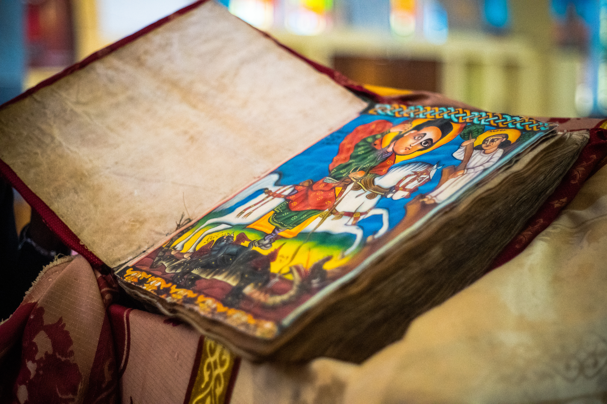
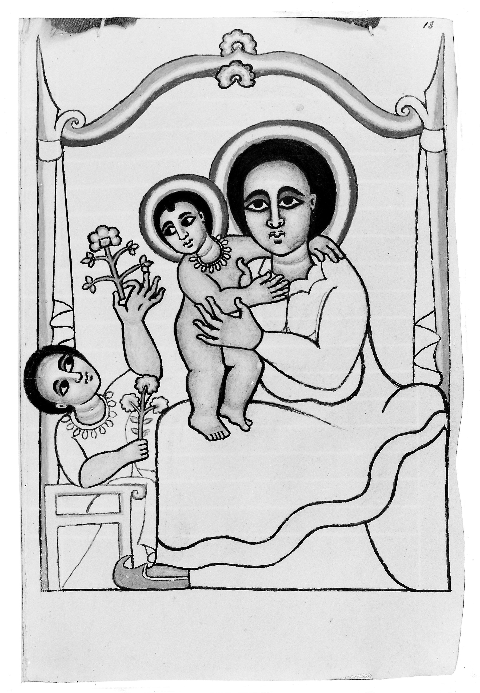

Forbidden Texts
The Ethiopian Bible
The biblical tradition of the Ethiopian Orthodox Tewahedo Church, known for preserving a broader canon than many Western Christian Bibles.
Visual Archive
These manuscript images are drawn from museum, library, and public-domain archive records where possible, including British Library and Wellcome collection material hosted through Wikimedia Commons.

{kind=link}

.jpg){kind=link}

{kind=link}

{kind=link}

{kind=link}

{kind=link}

{kind=link}

{kind=link}

{kind=link}
Why It Matters
The Ethiopian Bible belongs in Corpus Nexus because it keeps texts such as 1 Enoch and Jubilees within a sacred tradition, while many other Christian traditions treat them as apocryphal, non-canonical, or historical curiosities.
What Makes It Different
Its importance is not that it is hidden from everyone, but that it reveals how different communities preserved different boundaries around scripture, authority, memory, and revelation.
Research Notes
The Ethiopian Bible is tied to the Ethiopian Orthodox Tewahedo Church, one of the oldest Christian traditions in the world. Its scriptural heritage is usually described as broader than the Protestant, Catholic, and Eastern Orthodox canons, with the Ethiopian tradition commonly associated with an 81-book collection.
Several books are especially important to this entry: 1 Enoch, Jubilees, the books of Meqabyan, and other writings preserved in the Ethiopic tradition. 1 Enoch is central because it survived completely in Ge'ez after being lost or marginalized in much of the wider Christian world.
The word "forbidden" needs careful handling here. These texts are not forbidden inside the Ethiopian Orthodox tradition. They become "forbidden" or hidden only when viewed from traditions that excluded them, treated them as apocrypha, or forgot them outside specialist scholarship.
The Ge'ez manuscript tradition matters because it preserved texts, liturgy, and theological memory in a language that became sacred to Ethiopian Christianity. Research should separate three things: the living faith tradition, the manuscript history, and modern claims made online about "the oldest Bible" or "missing books."
Good research paths: compare the Ethiopian canon with Protestant, Catholic, and Eastern Orthodox canons; study why Enoch and Jubilees were preserved in Ethiopia; note the difference between Meqabyan and the Greek Maccabees; track which books are liturgical, canonical, broader-canon, or difficult to locate in complete printed form.
Prayer Positions in the Ethiopian Tradition
Some online discussions describe special prayer positions that Jesus Christ "spoke about in the Ethiopian Bible." The safer way to state it is this: Ethiopian Orthodox teaching preserves a strong embodied prayer tradition, drawing from the Gospels, the Fetha Negest, and church practice. The tradition emphasizes standing, turning east, making the sign of the cross, kneeling, bowing, and prostration.
Prayer Postures of Jesus Christ
The Ethiopian Orthodox understanding is not that Jesus Christ only prayed one way. It is closer to this: Jesus Christ taught sincere prayer, humble prayer, forgiving prayer, and surrendered prayer. His own example includes standing, looking upward, kneeling or prostrating, and praying privately before the Father.
Gospel Teaching
Standing Prayer
Jesus Christ referred to people who prayed standing in public places, but His warning was not against standing itself. His warning was against praying to be seen and praised by others. In Matthew 6:5-6, He says not to pray like hypocrites who stand in public to be noticed, but to pray privately before the Father.
Standing prayer is allowed, but it should be humble, not performative.
Gospel Teaching
Standing While Forgiving
In Mark 11:25, Jesus Christ says, "whenever you stand praying, forgive." This shows that standing was a normal prayer posture, but Jesus Christ connects it with a clean heart toward others.
The lesson is simple and severe: do not come before God while holding bitterness.
Gospel Example
Prostration: Face to the Ground
In Gethsemane, Jesus Christ prayed in deep surrender. Matthew 26:39 says He fell with His face to the ground and prayed, "not as I will, but as you will."
This is the strongest example of Jesus Christ using a posture of full humility. In Ethiopian Orthodox worship, prostration is very important; the faithful begin and end prayer with prostration at certain times.
Gospel Example
Looking Upward to Heaven
Jesus Christ also prayed while lifting His eyes toward heaven. In John 17:1, before His arrest, Jesus Christ lifted His eyes to heaven and prayed to the Father.
This posture shows trust, relationship, and direct address to God as Father.
Ethiopian Practice
Bowing, Kneeling, and Prostrating
Ethiopian Orthodox teaching distinguishes between bowing, kneeling, and prostration. One Ethiopian Orthodox source defines prostration as touching the ground with the forehead, kneeling as touching the ground with the knees, and bowing as lowering the head in homage.
| Posture | Meaning |
|---|---|
| Standing | Respect, prayer, forgiveness |
| Kneeling | Humility and petition |
| Face to the ground / prostration | Deep surrender before God |
| Eyes lifted to heaven | Trust and communion with the Father |
| Private prayer | Sincerity, not showing off |
Documented Practice
Standing to Pray
Ethiopian Orthodox teaching cites the words of the Lord about rising or standing for prayer. Standing is treated as a posture of readiness, reverence, and attention before God.
Documented Practice
Girding the Body
The Fetha Negest tradition says the one who prays should gird himself, echoing biblical language about having the loins girded. This frames prayer as disciplined, alert, and prepared rather than casual.
Documented Practice
Facing East
Prayer is traditionally oriented toward the east, connected to the expectation of Christ's return and the symbolic direction of light, resurrection, and divine appearing.
Documented Practice
Sign of the Cross
The faithful make the sign of the cross from forehead downward and from left to right. In this practice, prayer involves the body as well as the voice and mind.
Documented Practice
Kneeling and Prostration
The tradition points to Christ praying on the night of his passion as a model for kneeling and prostration. Prostration remains especially important in Ethiopian Orthodox worship, with the faithful beginning and ending prayer with prostrations in many settings.
Caution
Not a Secret Yoga Code
These postures should not be presented as a hidden exercise system unless a primary source is found. They are best understood as ancient Christian prayer disciplines: standing, bowing, kneeling, prostrating, crossing oneself, and praying with fear, reverence, and attention.
Open Questions
What changes when a text is treated as scripture in one tradition, but as forbidden, excluded, or forgotten in another?